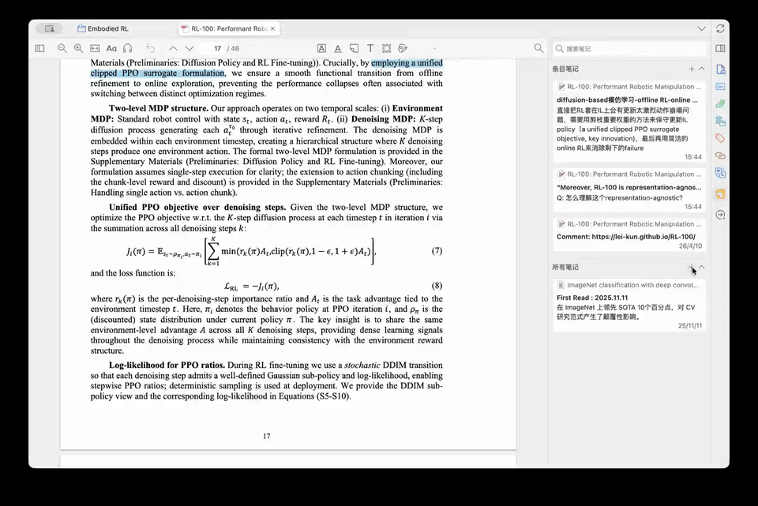

Zotero Paper Partner

A small question during paper reading can turn into a detour: switch to a chat window, copy the context, then wait for an answer. Zotero Paper Partner keeps that question in the note. Write it down and keep reading; the answer appears directly below it.


How to use it
- Start a question with
Q:in the Zotero note you are editing, press Enter, and continue reading. - The plugin uses the note's context to generate an answer in the background and inserts it below the question.
- Quotations, questions, and answers remain together in a regular note that you can keep editing.
Design choices
I wanted asking a question to fit the reading habits I already had. I can leave a question without immediately stopping, then return to find the relevant quotation and answer together.
If the context changes while a request is running, the plugin marks the old result as stale. Failed requests also have a visible error state, helping distinguish a current answer from an outdated or unsuccessful response.
Installation and setup
Download paper-partner.xpi from Releases and install it through Zotero's “Tools → Plugins → Install Add-on From File.” In the Paper Partner settings, enter an API key, endpoint, and model name. OpenAI-compatible endpoints are supported.
Development and reproduction
This project was built with extensive AI assistance—roughly 99% Vibe Coding. The original prompt and design specification are public as an Open Prompt in target.md, so others can give the same requirements to a coding agent to reproduce or extend the project. The repository also includes the full source and packaging instructions.